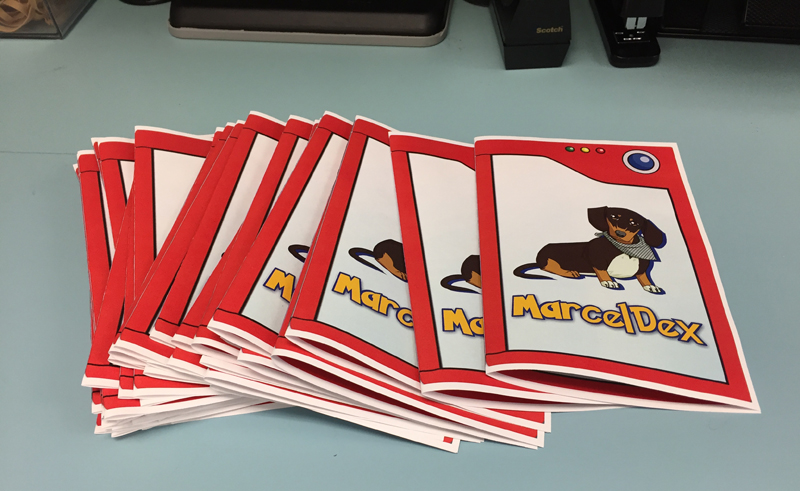
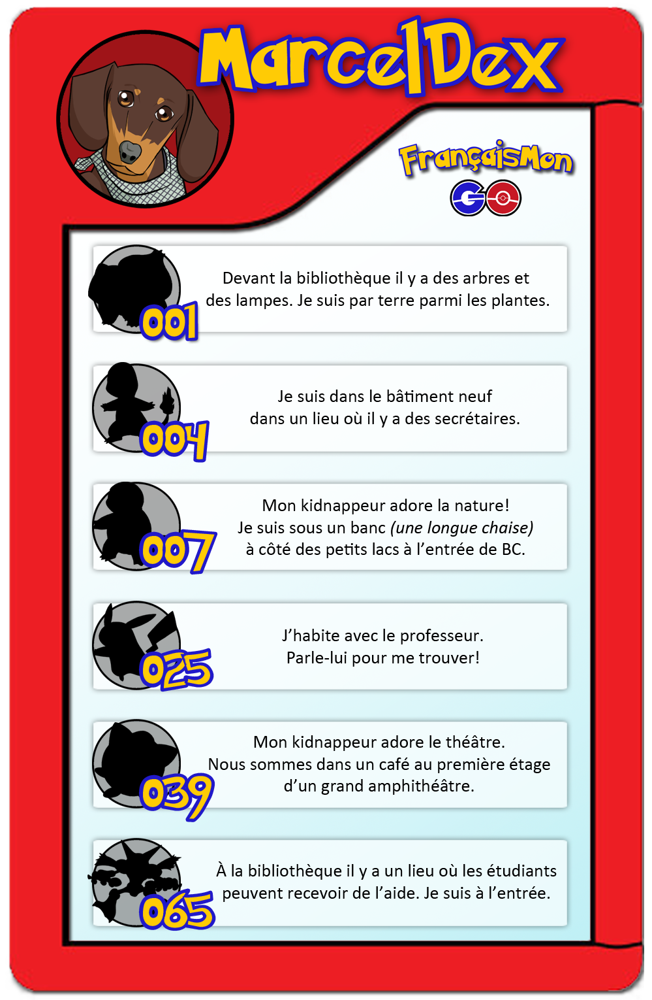
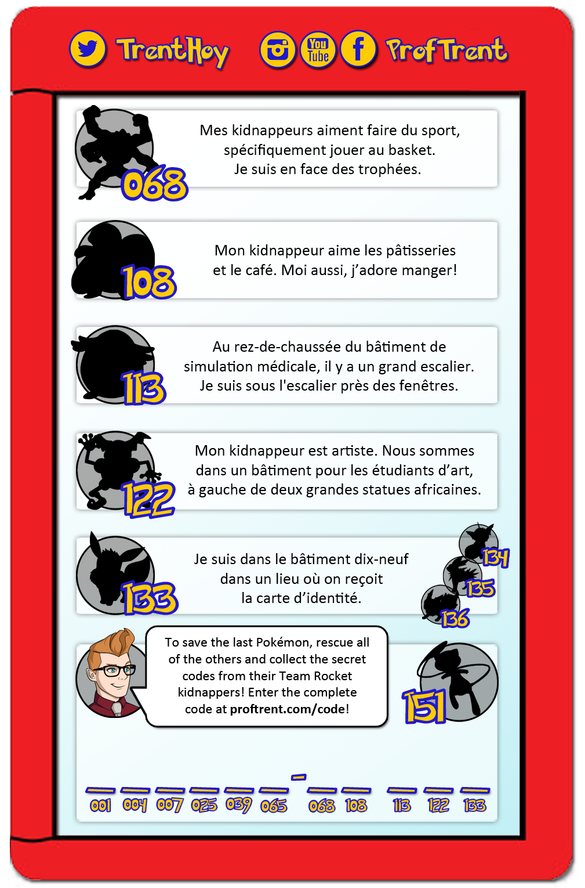

Review the clues that Marcel discovered to find the hidden ProfStops!
 Use the digital version below! Use the digital version below! |
 Or the printed one, if you're lucky! |
  |
FrançaisMon GO project archive
|
Use the digital version below! |
 Or the printed one, if you're lucky! |
  |